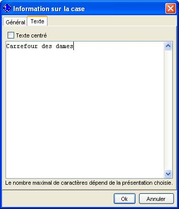
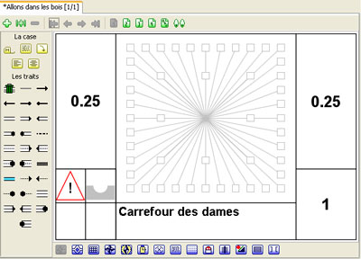

Choisir
Commentaire dans le menu
Données, une
boîte de dialogue apparaît pour vous permettre de saisir un commentaire. Le nombre maximal de caractères dépend de la mise en page retenue ainsi que de la taille de police choisie. Dans le cadre de cette formation, nous entrons "Carrefour des dames".

Au niveau de la case, dans le rectangle situé en bas, nous pouvons apercevoir notre commentaire pour cette case.
